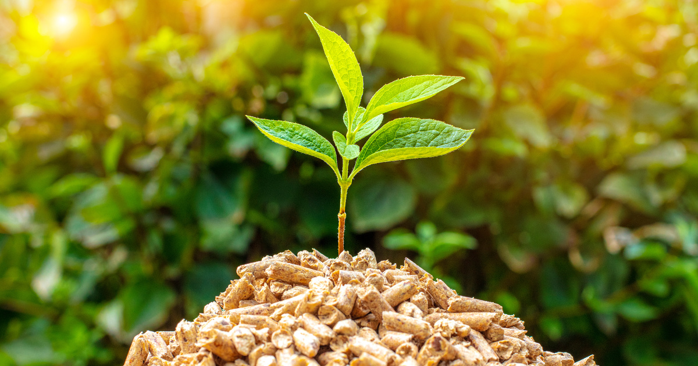

Energia biomasy
energia biomasy powstaje poprzez wykorzystanie substancji pochodzenia roślinnego lub zwierzęcego, które ulegają biodegradacji. Należą do nich odpady oraz pozostałości z gospodarstw domowych, rolnictwa czy przemysłu
. W Polsce energię cieplną oraz elektryczną pozyskuje się głównie dzięki bezpośredniemu spalaniu biomasy, ale zasoby można też uzyskać poprzez jej zgazowanie, estryfikację czy fermentację.

Energia biomasy
Odnawialne źródło: Biomasa to odnawialne źródło energii, ponieważ pochodzi z organicznych materiałów, takich jak drewno, resztki roślinne i odpady żywnościowe.
Redukcja odpadów: Wykorzystanie biomasy pozwala na przetworzenie i odzyskanie wartości z odpadów organicznych, co pomaga w ograniczeniu ilości odpadów na składowiskach.
Lokalna dostępność: Surowce biomasy są zazwyczaj dostępne lokalnie, co przyczynia się do zrównoważonego rozwoju obszarów wiejskich i decentralizacji produkcji energii.
Alternatywa dla paliw kopalnych: Energia biomasy może zastąpić paliwa kopalne, co pomaga w redukcji emisji gazów cieplarnianych i zanieczyszczeń powietrza.
Negatywne skutki energii biomasy:
Emisje gazów cieplarnianych: Spalanie biomasy może emitować CO2 i inne zanieczyszczenia, zwłaszcza jeśli nie jest to kontrolowane i nieefektywne spalanie.
Użycie surowców: W przypadku nadmiernego wykorzystywania biomasy do produkcji energii, może to prowadzić do wyczerpania zasobów drewna i innych surowców biomasy.
Konkurencja z produkcją żywności: Uprawy biomasy na cele energetyczne mogą konkurować z produkcją żywności, co może wpłynąć na dostępność żywności na rynku.
Potencjalne wpływy na środowisko: Nadmierny wyrąb drzew lub inne formy wykorzystania biomasy mogą wpłynąć na lokalne ekosystemy i bioróżnorodność.